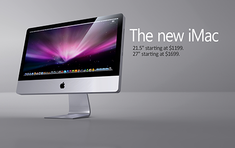

<load target="/common/js/plugins/node_modules/shufflejs/dist/shuffle.js" /> 

<style>


.aspect {
  position: relative;
  width: 100%;
  height: 0;
  padding-bottom: 100%;
  overflow: hidden;
}

.aspect__inner {
  position: absolute;
  top: 0;
  right: 0;
  bottom: 0;
  left: 0;
}

/* Add more aspect ratios here */
.aspect--16x9 {
  padding-bottom: 56.25%;
}


</style>

<script>
jQuery(document).ready(function($){


//var sizer = element.querySelector('.my-sizer-element');
console.log('b');

});


;(function($){
console.log('a');
	var Shuffle = window.shuffle;
    var $element = $('#grid');
	var $sizer = $element.find('.my-sizer-element');
	var shuffle = new Shuffle($element, {
	  itemSelector: '.picture-item',
	  sizer: $sizer // could also be a selector: '.my-sizer-element'
	});
})(jQuery);
</script>


<button id="btn-all">A</button><button id="btn-b">B</button>


<div id="grid" class="row my-shuffle-container">
  <figure class="col-sm-4 picture-item" data-groups='["photography"]' data-date-created="2010-09-14" data-title="Baseball">
    <div class="aspect aspect--16x9">
      <div class="aspect__inner">
        
      </div>
    </div>
    <figcaption>Baseball</figcaption>
  </figure>
  <figure class="col-sm-4 picture-item" data-groups='["wallpaper","3d"]' data-date-created="2011-08-14" data-title="Tennis">
    <div class="aspect aspect--16x9">
      <div class="aspect__inner">
        
      </div>
    </div>
    <figcaption>Tennis</figcaption>
  </figure>
  <figure class="col-sm-4 picture-item" data-groups='["wallpaper","3d"]' data-date-created="2009-05-27" data-title="iMac">
    <div class="aspect aspect--16x9">
      <div class="aspect__inner">
        
      </div>
    </div>
    <figcaption>iMac</figcaption>
  </figure>
  <div class="col-sm-4 my-sizer-element"></div>
</div>

